| 1 | 2 | 3 |
|---|---|---|
| lfd. Nr. | Zeichen und Zusatzzeichen | Ge- oder Verbote Erläuterungen |
| Abschnitt 1 Vorrangzeichen | ||
| 1 | Zeichen 301 Vorfahrt | Ge- oder Verbot Das Zeichen zeigt an, dass an der nächsten Kreuzung oder Einmündung Vorfahrt besteht. |
| 2 | Zeichen 306 Vorfahrtstraße | Ge- oder Verbot Wer ein Fahrzeug führt, darf außerhalb geschlossener Ortschaften auf Fahrbahnen von Vorfahrtstraßen nicht parken. Das Zeichen zeigt an, dass Vorfahrt besteht bis zum nächsten Zeichen 205 „Vorfahrt gewähren.“, 206 „Halt. Vorfahrt gewähren.“ oder 307 „Ende der Vorfahrtstraße“. |
| 2.1 | 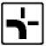 | Ge- oder Verbot
Das Zusatzzeichen zum Zeichen 306 zeigt den Verlauf der Vorfahrtstraße an. |
| 3 | Zeichen 307 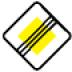 Ende der Vorfahrtstraße | |
| 4 | Zeichen 308 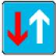 Vorrang vor dem Gegenverkehr | Ge- oder Verbot Wer ein Fahrzeug führt, hat Vorrang vor dem Gegenverkehr. |
| Abschnitt 2 Ortstafel | ||
| zu 5 und 6 | Erläuterung Ab der Ortstafel gelten jeweils die für den Verkehr innerhalb oder außerhalb geschlossener Ortschaften bestehenden Vorschriften. | |
| 5 | Zeichen 310 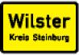 Ortstafel Vorderseite | Die Ortstafel bestimmt: Hier beginnt eine geschlossene Ortschaft. |
| 6 | Zeichen 311 Ortstafel Rückseite | Die Ortstafel bestimmt: Hier endet eine geschlossene Ortschaft. |
| Abschnitt 3 Parken | ||
| 7 | Zeichen 314 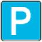 Parken | Ge- oder Verbot
|
| 8 | Zeichen 314.1 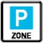 Beginn einer Parkraumbewirtschaftungszone | Ge- oder Verbot
Die Art der Parkbeschränkung wird durch Zusatzzeichen angezeigt. |
| 9 | Zeichen 314.2 Ende einer Parkraumbewirtschaftungszone | |
| 10 | Zeichen 315 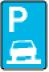 Parken auf Gehwegen | Ge- oder Verbot
|
| 11 | Bild 318 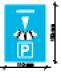 Parkscheibe | Ge- oder Verbot Ist die Parkzeit bei elektrisch betriebenen Fahrzeugen beschränkt, so ist der Nachweis durch Auslegen der Parkscheibe zu erbringen. |
| Abschnitt 4 Verkehrsberuhigter Bereich | ||
| 12 | Zeichen 325.1 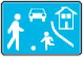 Beginn eines verkehrsberuhigten Bereichs | Ge- oder Verbot
|
| 13 | Zeichen 325.2 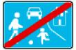 Ende eines verkehrsberuhigten Bereichs | Erläuterung Beim Ausfahren ist § 10 zu beachten. |
| Abschnitt 5 Tunnel | ||
| 14 | Zeichen 327 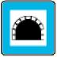 Tunnel | Ge- oder Verbote
|
| Abschnitt 6 Nothalte- und Pannenbucht | ||
| 15 | Zeichen 328 Nothalte- und Pannenbucht | Ge- oder Verbot Wer ein Fahrzeug führt, darf nur im Notfall oder bei einer Panne in einer Nothalte- und Pannenbucht halten. |
| Abschnitt 7 Autobahnen und Kraftfahrstraßen | ||
| 16 | Zeichen 330.1 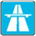 Autobahn | Erläuterung Ab diesem Zeichen gelten die Regeln für den Verkehr auf Autobahnen. |
| 17 | Zeichen 330.2 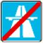 Ende der Autobahn | |
| 18 | Zeichen 331.1 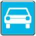 Kraftfahrstraße | Erläuterung Ab diesem Zeichen gelten die Regeln für den Verkehr auf Kraftfahrstraßen. |
| 19 | Zeichen 331.2 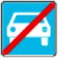 Ende der Kraftfahrstraße | |
| 20 | Zeichen 333 Ausfahrt von der Autobahn | Erläuterung Auf Kraftfahrstraßen oder autobahnähnlich ausgebauten Straßen weist das entsprechende Zeichen mit schwarzer Schrift auf gelbem Grund auf die Ausfahrt hin. Das Zeichen kann auch auf weißem Grund ausgeführt sein. |
| 21 | Zeichen 450 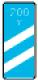 Ankündigungsbake | Erläuterung Das Zeichen steht 300 m, 200 m (wie abgebildet) und 100 m vor einem Autobahnknotenpunkt (Autobahnanschlussstelle, Autobahnkreuz oder Autobahndreieck). Es steht auch vor einer bewirtschafteten Rastanlage. Vor einem Knotenpunkt kann auf der 300 m-Bake die Nummer des Knotenpunktes angezeigt sein. |
| Abschnitt 8 Markierungen | ||
| 22 | Zeichen 340 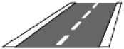 Leitlinie | Ge- oder Verbot
Der Schutzstreifen für den Radverkehr ist in regelmäßigen Abständen mit dem Sinnbild „Radverkehr“ auf der Fahrbahn gekennzeichnet. |
| 23 | Zeichen 341 Wartelinie | Erläuterung Die Wartelinie empfiehlt dem Wartepflichtigen, an dieser Stelle zu warten. |
| 23.1 | Zeichen 342 Haifischzähne | Erläuterung Die Markierung hebt eine Wartepflicht infolge einer bestehenden Rechts-vor-links-Regelung abseits der Bundes-, Landes- und Kreisstraßen sowie weiterer Hauptverkehrsstraßen und eine durch Zeichen 205 oder 206 angeordnete Vorfahrtberechtigung des Radverkehrs im Zuge von Kreuzungen oder Einmündungen von Radschnellwegen hervor. Im Fall dieser Vorfahrtberechtigung des Radverkehrs sind die Markierungen auf beiden Seiten entlang der Fahrbahnkanten des Radschnellwegs mit den Spitzen in Richtung des wartepflichtigen Verkehrs anzuordnen. |
| Abschnitt 9 Hinweise | ||
| 24 | Zeichen 350 Fußgängerüberweg | |
| 24.1 | Zeichen 350.1 Radschnellweg | Erläuterung Das Zeichen steht an Radschnellwegen. Es dient der Unterrichtung über den Beginn von Radschnellwegen und der Führung von Radschnellwegen an Knotenpunkten. |
| 24.2 | Zeichen 350.2 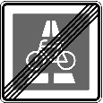 Ende des Radschnellwegs | |
| 25 | Zeichen 354 Wasserschutzgebiet | |
| 26 | Zeichen 356 Verkehrshelfer | |
| 27 | Zeichen 357 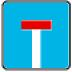 Sackgasse | Erläuterung Im oberen Teil des Verkehrszeichens kann die Durchlässigkeit der Sackgasse für den Radverkehr und/oder Fußgängerverkehr durch Piktogramme angezeigt sein. |
| zu 28 und 29 | Erläuterung
| |
| 28 | Zeichen 358 Erste Hilfe | |
| 29 | Zeichen 363 Polizei | |
| 30 | Zeichen 385 Ortshinweistafel | |
| zu 31 und 32 | Erläuterung Die Zeichen stehen außerhalb von Autobahnen. Sie dienen dem Hinweis auf touristisch bedeutsame Ziele und der Kennzeichnung des Verlaufs touristischer Routen. Sie können auch als Wegweiser ausgeführt sein. | |
| 31 | Zeichen 386.1 Touristischer Hinweis | |
| 32 | Zeichen 386.2 Touristische Route | |
| 33 | Zeichen 386.3 Touristische Unterrichtungstafel | Erläuterung Das Zeichen steht an der Autobahn. Es dient der Unterrichtung über touristisch bedeutsame Ziele. |
| 34 | Zeichen 390 Mautpflicht nach dem Bundesfernstraßenmautgesetz | |
| 35 | Zeichen 391 Mautpflichtige Strecke | |
| 36 | Zeichen 392 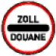 Zollstelle | |
| 37 | Zeichen 393 Informationstafel an Grenzübergangsstellen | |
| 38 | Zeichen 394 Laternenring | Erläuterung Das Zeichen kennzeichnet innerhalb geschlossener Ortschaften Laternen, die nicht die ganze Nacht leuchten. In dem roten Feld kann in weißer Schrift angegeben sein, wann die Laterne erlischt. |
| Abschnitt 10 Wegweisung | ||
| 1. Nummernschilder | ||
| 39 | Zeichen 401 Bundesstraßen | |
| 40 | Zeichen 405 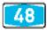 Autobahnen | |
| 41 | Zeichen 406 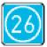 Knotenpunkte der Autobahnen | Erläuterung So sind Knotenpunkte der Autobahnen (Autobahnausfahrten, Autobahnkreuze und Autobahndreiecke) beziffert. |
| 42 | Zeichen 410 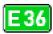 Europastraßen | |
| 2. Wegweiser außerhalb von Autobahnen | ||
| a) Vorwegweiser | ||
| 43 | Zeichen 438 | |
| 44 | Zeichen 439 | |
| 45 | Zeichen 440 | |
| 46 | Zeichen 441 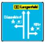 | |
| b) Pfeilwegweiser | ||
| zu 47 bis 49 | Erläuterung Das Zusatzzeichen „Nebenstrecke“ oder der Zusatz „Nebenstrecke“ im Wegweiser weist auf eine Straßenverbindung von untergeordneter Bedeutung hin. | |
| 47 | Zeichen 415 | Erläuterung Pfeilwegweiser auf Bundesstraßen |
| 48 | Zeichen 418 | Erläuterung Pfeilwegweiser auf sonstigen Straßen |
| 49 | Zeichen 419 | Erläuterung Pfeilwegweiser auf sonstigen Straßen mit geringerer Verkehrsbedeutung |
| 50 | Zeichen 430 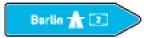 | Erläuterung Pfeilwegweiser zur Autobahn |
| 51 | Zeichen 432 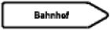 | Erläuterung Pfeilwegweiser zu Zielen mit erheblicher Verkehrsbedeutung. |
| c) Tabellenwegweiser | ||
| 52 | Zeichen 434 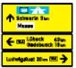 | Erläuterung Der Tabellenwegweiser kann auch auf einer Tafel zusammengefasst sein. Die Zielangaben in einer Richtung können auch auf separaten Tafeln gezeigt werden. |
| d) Ausfahrttafel | ||
| 53 | Zeichen 332.1 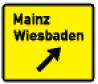 | Erläuterung Ausfahrt von der Kraftfahrstraße oder einer autobahnähnlich ausgebauten Straße. Das Zeichen kann innerhalb geschlossener Ortschaften auch mit weißem Grund ausgeführt sein. |
| e) Straßennamensschilder | ||
| 54 | Zeichen 437 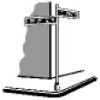 | Erläuterung Das Zeichen hat entweder weiße Schrift auf dunklem Grund oder schwarze Schrift auf hellem Grund. Es kann auch an Bauwerken angebracht sein. |
| 3. Wegweiser auf Autobahnen | ||
| a) Ankündigungstafeln | ||
| zu 55 und 58 | Erläuterung Die Nummer (Zeichen 406) ist die laufende Nummer der Autobahnausfahrten, Autobahnkreuze und Autobahndreiecke der gerade befahrenen Autobahn. Sie dient der besseren Orientierung. | |
| 55 | Zeichen 448 | Erläuterung Das Zeichen weist auf eine Autobahnausfahrt, ein Autobahnkreuz oder Autobahndreieck hin. Es schließt Zeichen 406 ein. |
| 56 |  | Erläuterung Das Sinnbild weist auf eine Ausfahrt hin. |
| 57 | 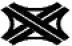 | Erläuterung Das Sinnbild weist auf ein Autobahnkreuz oder Autobahndreieck hin; es weist auch auf Kreuze und Dreiecke von Autobahnen mit autobahnähnlich ausgebauten Straßen des nachgeordneten Netzes hin. |
| 58 | Zeichen 448.1 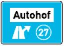 | Erläuterung
|
| b) Vorwegweiser | ||
| 59 | Zeichen 449 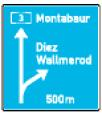 | |
| c) Ausfahrttafel | ||
| 60 | Zeichen 332 | |
| d) Entfernungstafel | ||
| 61 | Zeichen 453 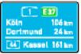 | Erläuterung Die Entfernungstafel gibt Fernziele und die Entfernung zur jeweiligen Ortsmitte an. Ziele, die über eine andere als die gerade befahrene Autobahn zu erreichen sind, werden unterhalb des waagerechten Striches angegeben. |
| Abschnitt 11 Umleitungsbeschilderung | ||
| 1. Umleitung außerhalb von Autobahnen | ||
| a) Umleitungen für bestimmte Verkehrsarten | ||
| 62 | Zeichen 442 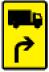 Vorwegweiser | Erläuterung Vorwegweiser für bestimmte Verkehrsarten |
| 63 | Zeichen 421 | Erläuterung Pfeilwegweiser für bestimmte Verkehrsarten |
| 64 | Zeichen 422 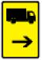 | Erläuterung Wegweiser für bestimmte Verkehrsarten |
| b) Temporäre Umleitungen (z. B. infolge von Baumaßnahmen) | ||
| 65 | Erläuterung Der Verlauf der Umleitungsstrecke kann gekennzeichnet werden durch | |
| 66 | Zeichen 454 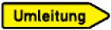 | Erläuterung Umleitungswegweiser oder |
| 67 | Zeichen 455.1 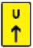 | Erläuterung Fortsetzung der Umleitung |
| zu 66 und 67 | Erläuterung Die Zeichen 454 und 455.1 können durch eine Zielangabe auf einem Schild über den Zeichen ergänzt sein. Werden nur bestimmte Verkehrsarten umgeleitet, sind diese auf einem Zusatzzeichen über dem Zeichen angegeben. | |
| 68 | Erläuterung Die temporäre Umleitung kann angekündigt sein durch Zeichen 455.1 oder | |
| 69 | Zeichen 457.1 | Erläuterung Umleitungsankündigung |
| 70 | Erläuterung jedoch nur mit Entfernungsangabe auf einem Zusatzzeichen und bei Bedarf mit Zielangabe auf einem zusätzlichen Schild über dem Zeichen. Soll die Ankündigung nur für bestimmte Verkehrsarten gelten, sind diese auf einem Zusatzzeichen über dem Zeichen angegeben. | |
| 71 | Erläuterung Die Ankündigung kann auch erfolgen durch | |
| 72 | Zeichen 458 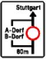 | Erläuterung eine Planskizze |
| 73 | Erläuterung Das Ende der Umleitung kann angezeigt werden durch | |
| 74 | Zeichen 457.2 | Erläuterung Ende der Umleitung oder |
| 75 | Zeichen 455.2 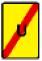 | Erläuterung Ende der Umleitung |
| 2. Bedarfsumleitung für den Autobahnverkehr | ||
| 76 | Zeichen 460 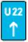 Bedarfsumleitung | Erläuterung Das Zeichen kennzeichnet eine alternative Streckenführung im nachgeordneten Straßennetz zwischen Autobahnanschlussstellen. |
| 77 | Zeichen 466 Weiterführende Bedarfsumleitung | Erläuterung Kann der umgeleitete Verkehr an der nach Zeichen 460 vorgesehenen Anschlussstelle noch nicht auf die Autobahn zurückgeleitet werden, wird er durch dieses Zeichen über die nächste Bedarfsumleitung weitergeführt. |
| Abschnitt 12 Sonstige Verkehrsführung | ||
| 1. Umlenkungspfeil | ||
| 78 | Zeichen 467.1 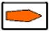 Umlenkungspfeil | Erläuterung Das Zeichen kennzeichnet Alternativstrecken auf Autobahnen, deren Benutzung im Bedarfsfall empfohlen wird (Streckenempfehlung). |
| 79 | Zeichen 467.2 | Erläuterung Das Zeichen kennzeichnet das Ende einer Streckenempfehlung. |
| 2. Verkehrslenkungstafeln | ||
| 80 | Erläuterung Verkehrslenkungstafeln geben den Verlauf und die Anzahl der Fahrstreifen an, wie beispielsweise: | |
| 81 | Zeichen 501 Überleitungstafel | Erläuterung Das Zeichen kündigt die Überleitung des Verkehrs auf die Gegenfahrbahn an. |
| 82 | Zeichen 531 Einengungstafel | |
| 82.1 | Erläuterung Bei Einengungstafeln wird mit dem Zusatzzeichen der Ort angekündigt, an dem der Fahrstreifenwechsel nach dem Reißverschlussverfahren (§ 7 Absatz 4) erfolgen soll. | |
| 3. Blockumfahrung | ||
| 83 | Zeichen 590 Blockumfahrung | Erläuterung Das Zeichen kündigt eine durch die Zeichen „Vorgeschriebene Fahrtrichtung“ (Zeichen 209 bis 214) vorgegebene Verkehrsführung an. |